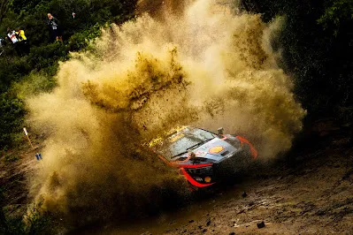
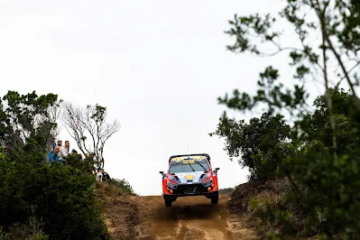
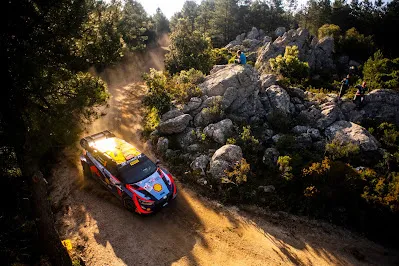
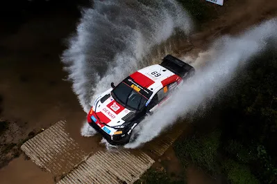
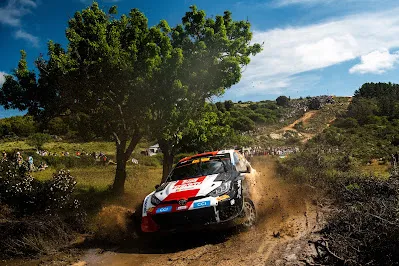
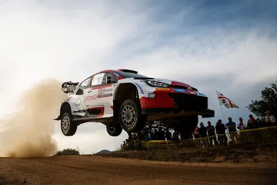
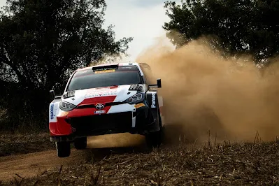
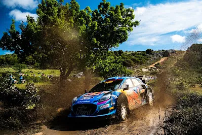
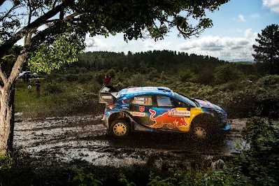

Dimitris’ Driver Ratings - Rally Italia Sardegna
Dimitris’ Driver Ratings
Rally Italia Sardegna
Round 6 of the World Rally Championship gave us the most drama filled rally of the season so far with only 4 Rally1s in the Top 10 and torrential rain in all the 3 days of action making the conditions incredibly difficult for all the crews. But who prospered and who faltered in Sardegna ? Let’s find out with the inaugural Powerslide Driver Ratings !
All of the photos are from the Red Bull Content Pool
Hyundai
Thierry Neuville – 8.5/10 – 1st
Thierry Neuville got his first win of the season in Sardegna. He had an OK Friday, struggling on hard tyres on the first pass of the massive 50km Monte Lerno test, and losing 25s to Sebastien Ogier. His performance on Saturday afternoon is what won him the rally though. After Ogier damaged his car (twice) in watersplashes, the gap between the top 3 was 7.4s. Neuville threw caution outside the window on stage 14 and built himself a 23.8s advantage over teammate Esapekka Lappi. Admittedly Lappi did back off massively after seeing Ogier’s stricken car but such was the pace that I don’t think Lappi could have done much about it. Neuville didn’t score any power stage points though which lowers his score, but it takes nothing away from his win and performance

I think Sardegna was Lappi’s best performance in Hyundai colours. The Finn made the most of his road position on Friday, ending the rally in the lead by a miniscule 0.1 seconds. He lost the lead on the first stage of the next day only to regain it on the next stage. He lost a lot of time to Ogier on the next two stages of the loop though. He made gains on Ogier’s lead in the afternoon but conceaded the provisional lead to his teammate after Ogier crashed. After that he just cruised to the end having nothing to fight for.
Dani Sordo – 5/10 – DNF

Not one of Sordo’s best Sardegna performances. The Spaniard rolled on the first pass of Monte Lerno and lost over 4 minutes because of it. His rally was essentially over from then on, he did well to recover back up to 5th place, making the most of his road position on Saturday. Unfortunately he would retire on Sunday from an exhaust failure
Toyota

I think Kalle Rovanpera took as many points as he could have taken from Sardegna. The championship leader took 20 points from the rally, winning the power stage in the process, extending his championship lead to 25 points over Neuville. Despite being first on the road on Day 1 he finished the day in 4th after a mega stage on the 2nd pass of the Monte Lerno stage. After that it was managing his rally until the end, benefiting from Ogier’s off to get his 3rd podium of the season. He was also the only Yaris not to suffer damage from a watersplash !
Elfyn Evans – 4.5/10 – 4th

Evans had a very troublesome rally in Italy. The Welshman didn’t show any pace to challenge for the podium, nevermind win. He damaged his Yaris in a watersplash not once but twice, and lost time because of it. He finished 4th, last of the Rally1s to finish in the top 10, 5 minutes off eventual winner Neuville. With Safari next, it’s up to him to get his season back on track, which got derailed after his big Portugal crash.
Sebastien Ogier – 5.5/10 – 14th

A rare off cost Ogier the win in Sardegna. The Frenchman was on course for his 3rd win of the season, in just his 4th outing this year, and he was having a faultless but his chances at the win went out the window on Saturday afternoon. Ogier suffered damage on the front of his car on SS12 and SS13 and lost most of his lead. He then succumbed to the tricky conditions, with his boot slipping off the brake pedal and he ended up in a ditch. He super rallied on Sunday and got 4th in the power stage. What could have been…
Takamoto Katsuta – 3.5/10 – 40th

Takamoto was the first Toyota to succumb to the water splashes in Italy. The Japanese driver was up to 5th when he approached a water splash with way too much speed and damaged his radiator. That put him out for the remainder of Saturday. Before that though Taka won stage 3 and was running as high as 3rd. It’s a shame he couldn’t get a result in Sardegna, but the Japanese driver only has 2 non super rally finishes this year in Monte Carlo and Croatia. If he wants to retain his factory seat next season, he really needs to find his consistency back.
M-Sport
Ott Tanak – 4.5/10 – 35th

This was a nightmare weekend for M-Sport. The highest M-Sport car was Gregoire Munster in 11th in the Rally2 ! Ott Tanak had a miserable weekend. He never jelled with his Puma Rally1, having a lot of issues with the car, and his road position didn’t help. He was a minute off Ogier heading to SS9. In SS9 he drowned the car’s engine in a water crossing and that put him out of the rally. He super rallied on Sunday and won 2 stages and got 2nd in the Power Stage and the 4 points that come with it as consolation.
Pierre Louis Loubet – 7/10 – DNF

Pierre Louis can’t catch a break ! The Frenchman was in 3rd when his gear stick got stuck. He was saved from DNFing when the stage got red flagged, but he was given a 3 minute penalty. It got worse for Loubet, as his steering failed (?) (not quite sure on what failed but something definitely did) and ended up in a ditch. He didn’t restart the rally because of extensive damage on his Puma.


Comments